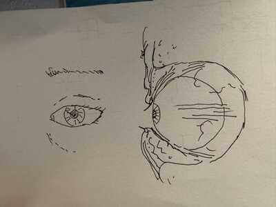
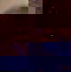
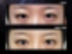
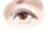
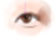

안녕하세요 전원장입니다

사람의 눈은 뼈의 위치에서 부터 시작해 눈알의 크기, 근육의 세기, 지방의 양, 피부의 두께까지 다양한 변수로 인해 똑같은 눈은 단 하나도 없다고 해도 과언이 아닙니다. 그래서 똑같은 쌍꺼풀라인을 한 사람의 눈에 만들어도, 양쪽 눈의 특성 차이로 인해 미묘한 뉘앙스나 밸런스의 차이가 생기게 됩니다.
여기서 더 복잡한 상황은, 이전의 수술이 밸런스가 깨진, 두께가 너무 높은 소세지 쌍꺼풀의 상태일 때 발생합니다. 이런 비정상적인 모양과 상태를 정상의 상태로 되돌리는 재수술은, 생각보다 간단한 일은 아닙니다.
중요한 지점 : 어떤 쌍꺼풀로 만드는 것을 목표로 해야 하는가?
원하는 모양이 사람마다 다르므로, 다들 제각각의 모양으로 수술해야 한다고 생각할지 모르지만, 해달라고 다 해주면 안되고, 이상적이고 안전한 모양과 라인이 있습니다.
특히 소세지쌍꺼풀을 낮추는 경우에는, '얇은 인아웃라인'을 목표로 삼는 것이 매우 안전합니다.
확실하게 소세지 느낌이 없어져야, 대부분의 소세지 쌍꺼풀 재수술 환자는 만족합니다.

이 정도면 존재감이 있는 편입니다
존재감이 남는 라인으로 재수술을 하면, 수술 전에 강력하게 '조금만 낮춰주세요'라고 요구했던 분들도, 원했던게 이게 아닌데 하면서 불만족 감정이 강해지시는 상황을 많이 경험을 했습니다.
얇은 인아웃 라인이란 어떤 라인인가?
인아웃 라인은 라인의 시작점이 열려있지 않고 닫혀있으나, 몽고주름으로 인해 완전히 라인이 가려지지 않고, 얇게 시작하는 라인을 이야기합니다. 얇은 인아웃 라인이란, 여기서 라인 자체의 존재감이 자연스러운 버전을 말하는데, 조금 더 구체적으로 그 모양을 묘사하겠습니다. 많은 분들이 쌍꺼풀 라인을 묘사할 때 놓치는 것이, 라인 아래의 피부가 어둡냐 밝게 보이냐 입니다. 쌍꺼풀이 너무 밝게 보인다는 것은 부자연스럽다는 이야기이고, 쌍꺼풀의 존재감이 과하기 때문에 눈동자는 오히려 어둡고 졸려보일 수 있다는 이야기입니다.

적절하게 라인 위의 피부에서 그림자가 져서 어두워 보이는 쌍꺼풀이 보통은 자연스럽게 느껴집니다. 그리고 그 기준에서 모양이 만들어지면, 눈매 자체가 길어보이는 효과도 낮춤으로서 만들어지게 됩니다.


그래서 결국, 얇은 인아웃라인에서 가장 중요한 조건은, 어둡고 '선'에 가깝게 시작하는 앞라인입니다.
앞라인이 애초에 두꺼운 아웃라인+소세지쌍꺼풀은 이 앞라인을 완전히 환골탈태 시키는데에 수술 디자인과 박리, 눈매교정의 초점을 둡니다. 그게 수술의 핵심이 됩니다.
제가 아주 예전에 라인낮추기 수술을 처음 시작했을 때는 이런 사실을 확실히 알지 못하여서, 앞라인이 두껍게 남앀서 a/s를 해드린 분들이 종종 있었습니다. 그런 번거로운 절차를 거치고 난 후, 소세지 재수술에서 가장 중요한 디테일은 '충분히 낮아진 앞라인'이란 사실을 깨달았고, 지금까지 수술에 적용하여 확실하게 해결해드리고 있습니다.
얇은 인아웃라인에서의 눈매교정
쌍꺼풀의 존재감을 낮추는 재수술은, 라인만 예쁘게 보이기 위해서 하는 것이 아닙니다. 눈 뜨는 힘과 눈동자 크기가 자연스러우면서도 효율적으로 극대화되는 효과를 위해서입니다. 같은 세기의 눈매교정이라도 두꺼운 쌍꺼풀에서 적용하면 함몰되는 힘으로 힘이 분산되어 함몰흉만 세지고 속눈썹만 점막들림이 생깁니다. 얇은 쌍꺼풀에서 적절한 눈매교정은, 눈매교정의 부작용에서도 자유로워진, 자연스러운 커진 눈을 만들게 합니다.
눈매교정 단 하나만으로 모든걸 조절한다는 단순한 관점이, 소세지쌍꺼풀과 함몰흉터를 만드는 사례가 매우 많습니다. 제가 '얇은 인아웃라인'을 강조하는 이유입니다.
두꺼운 쌍꺼풀에서 얇은인아웃라인으로 변모하며 인상 자체가 젊어보이고 덜 부담스러워진 경우를 저는 매일같이 만들어드리고 있습니다.